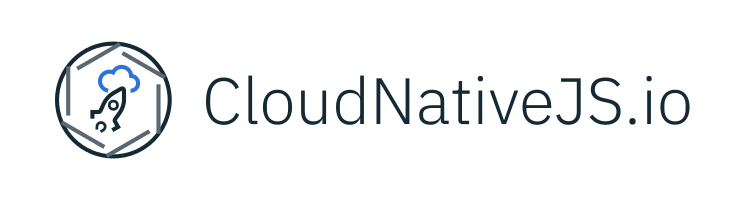

Create Cloud Native Node.js Applications.
Nearly all Node.js applications are now deployed to the cloud, but only 12% of these utilize the full potential of modern cloud computing platforms.
CloudNativeJS is an open source community project that aims to provide best-practices, assets, and tools to make it easier to integrate open source technologies from the Cloud Native Computing Foundation (CNCF) and build enterprise-grade, cloud native Node.js applications.
Choose your modules...
CloudNativeJS’s Module Insights helps you choose which modules you should depend on in your Enterprise Node.js applications. Module Insights gathers information about popular Node.js modules, including their stability, license, and version information. It also executes a modules' own test suite against all current LTS versions of Node.js across multiple platforms, to determine whether a module is passing its own test suite across the stable major Node.js versions. You can use these test results to determine whether the Node.js module you are selecting is appropriate for your target deployment architecture.
Launch Module Insights Docs
Add health checking...
When using cloud platforms such as Kubernetes, health-checking enables the cloud platform to determine readiness (is your application ready to receive requests?) and liveness (is your application live or does it need to be restarted?) of your application.
The ‘cloud-health’ module is a core library that provides health checking and gives you more control over application lifecycle management (startup, running, shutdown). The 'cloud-health-connect' module exposes the health-check information on readiness/liveness endpoints to help the cloud platforms manage your application.
View on GitHub DocsTrack your requests...
Track requests as they propagate through distributed services and understand how relationships between these requests influence your application. OpenTracing enables vendor neutral instrumentation of distributed applications with minimal effort. See how you can instrument your application with OpenTracing based request tracking with a one-line change.
View on GitHub DocsPower your metrics...
Enable powerful monitoring for your distributed application and configure rule-based alerting using Prometheus open source project. This is vital for diagnosing problems and ensuring the reliability of your application.
The "appmetrics-prometheus" module will collect a wide range of resource-centric (CPU, memory) and application-centric (HTTP request responsiveness) metrics from your application, and then expose them as multi-dimensional time-series data through an application endpoint for Prometheus to scrape and aggregate.
View on GitHub DocsBuild your Docker image...
Docker makes it easy to create, deploy, and run applications by using containers. Containers allow a developer to package up an application with everything it needs, ensuring that it runs consistently across Docker enabled machines regardless of any customization.
The “docker” repository provides a set of template Dockerfiles that implement the best-practices for building development and production Docker images for your applications. These can easily be modified and applied to any Node.js application.
View on GitHub DocsDeploy to Kubernetes.
Kubernetes is an orchestration tool designed to automate the deployment, scaling, and operating of containerized applications in cluster environments. Helm, the package manager for Kubernetes, allows you to define, install, and upgrade your Kubernetes application.
The “helm” repository provides a template Helm chart that simplifies the process of taking a Docker image of your application and deploying it to Kubernetes along with configuration for replicas and autoscaling. Additionally, the templates provide configuration for using liveness and readiness based Health Checking, Prometheus metrics, OpenTracing with Zipkin, and support for using additional cloud-native technologies like Istio.
View on GitHub Docs